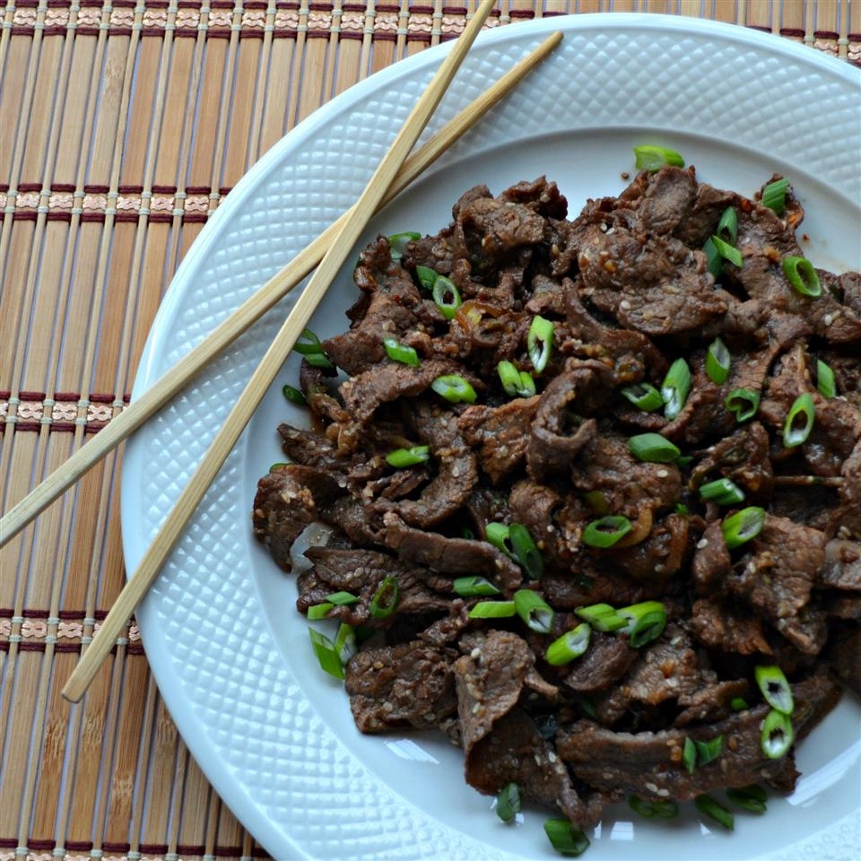

Bulgogi

Description
A delicous Korean recipe that's easy to make!
Korean-style grilled or
roasted dish) made of thin, marinated slices of beef or pork grilled on a
barbecue or on a stove-top griddle. It is also often stir-fried in a pan
in home cooking. Sirloin, rib eye or brisket are frequently used cuts of
beef for the dish. The dish originated from northern areas of the Korean
Peninsula, but is a very popular dish in South Korea, where it can be
found anywhere from upscale restaurants to local supermarkets as pan-ready
kits.
Ingredients
- ¼ yellow onion, thinly sliced
- 2 green onions, chopped, dark green parts separated from white and light green parts
- ⅓ cup soy sauce
- 3 tablespoons white sugar
- 2 tablespoons toasted sesame seeds
- 3 cloves garlic, minced
- 1 tablespoon sesame oil
- ¼ teaspoon Korean red pepper flakes
- ¼ teaspoon minced fresh ginger
- ⅛ teaspoon ground black pepper
- 1 ½ pounds beef sirloin steak, cut very thin using kitchen shears
- 1 teaspoon honey, or to taste